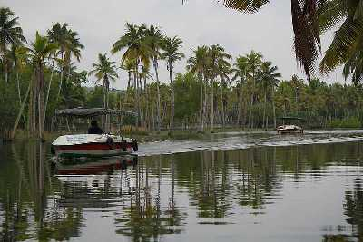

Padmanabhaswamy Temple
Dedicated to Lord Padmanabha; one of the avatars of Lord Vishnu, the Padmanabhaswamy Temple is one of the principal centres of Vaishnava worship in the dharma of Vaishnavism.
Neyyar Dam & Wildlife Sanctuary
Famous for its Lion and Deer Safari, Neyyar Wildlife Sanctuary is a treat for nature enthusiasts.

Poovar
Poovar is a small rustic town situated 27 kms from Thiruvananthapuram with unspoilt, unexplored golden sand beaches and beautiful backwaters of Kerala.

Varkala Beach
Varkala Beach, also known as Papanasham Beach, and Pearl of Arabian Sea is a cliff beach situated in the coastal city of Varkala.The beach skirts the Arabian Sea, part of the Indian Ocean